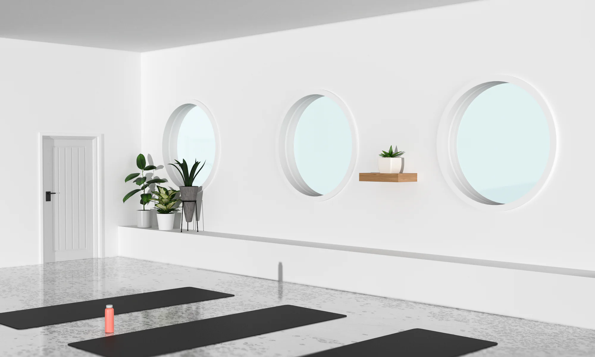
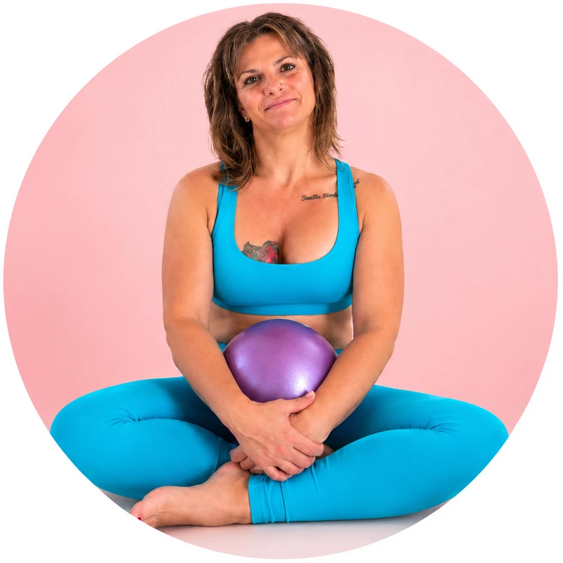
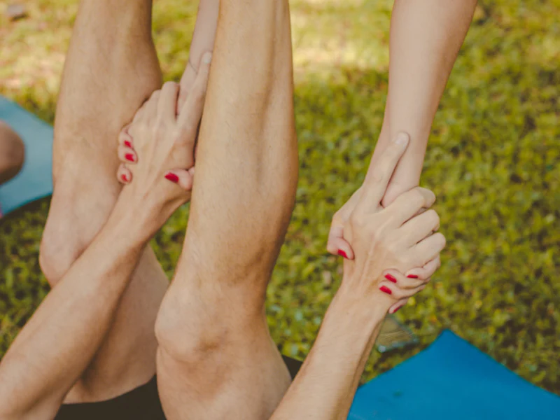
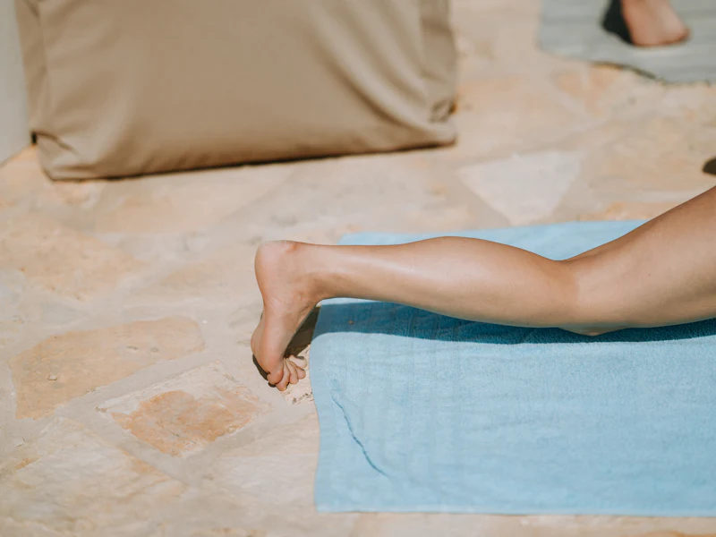
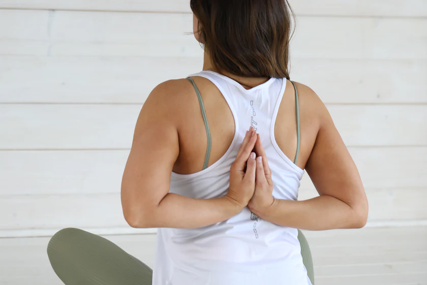
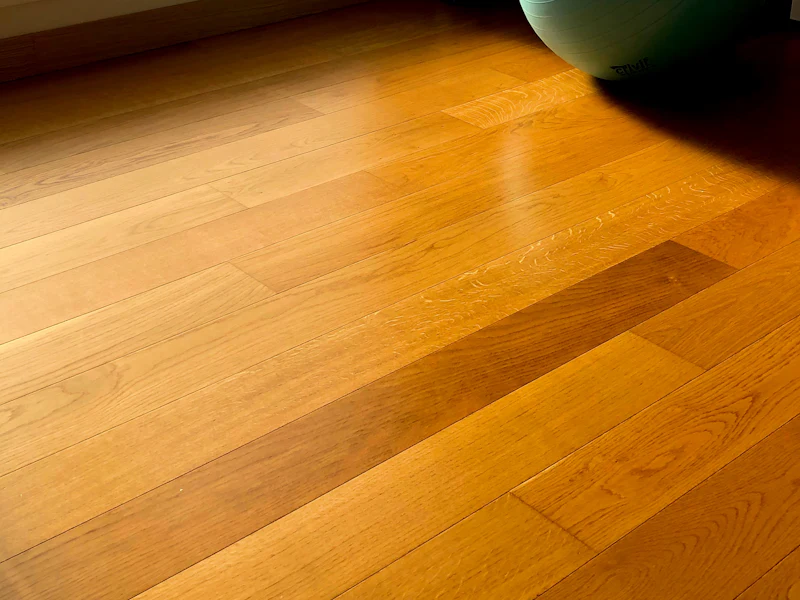

A chi desidera ricominciare
Per chi sente il bisogno di ritagliarsi uno spazio personale e avvicinarsi al movimento con gradualità, ascolto e rispetto dei propri ritmi.

Yoga · Acroyoga · Ginnastica dolce
Attraverso Yoga, Acroyoga e Ginnastica dolce, ti accompagno alla scoperta di un movimento più consapevole, nel rispetto dei tuoi tempi e delle possibilità del tuo corpo.

Chi sono
Sono Serena Cagalli e sono insegnante di Yoga posturale, Acroyoga e Ginnastica dolce: accompagno le persone a riscoprire il piacere di muoversi, con ascolto e consapevolezza.
Il movimento ha sempre fatto parte della mia vita. Ho sempre amato lo sport acrobatico e, nel corso degli anni, ho sperimentato discipline diverse, dalla pole dance all'acrobatica sul cerchio, fino a scoprire l'Acroyoga, che mi ha conquistata completamente.
La mia passione per il movimento e il benessere mi ha portata a scegliere la strada dell'insegnamento, con il desiderio di condividere ciò che queste pratiche possono offrire.
Credo che muoversi significhi molto più che allenarsi: significa ascoltare il proprio corpo, scoprirne le possibilità e coltivare consapevolezza. Il mio obiettivo è accompagnarti verso un rapporto più consapevole e sereno con il movimento.
Da questa visione nasce anche il mio podcast Il Corpo Sa — Ascolta · Medita · Libera, uno spazio dedicato all'ascolto del corpo e al movimento consapevole.
Podcast Il Corpo Sa · Ascolta · Medita · Libera
A chi mi rivolgo
Ogni persona parte da un'esperienza diversa. Il movimento può diventare un'occasione per esplorare nuove possibilità, ritrovare fiducia e dedicarsi attenzione.
Per chi sente il bisogno di ritagliarsi uno spazio personale e avvicinarsi al movimento con gradualità, ascolto e rispetto dei propri ritmi.
Per chi desidera esplorare equilibrio, coordinazione e collaborazione attraverso discipline dinamiche come l'Acroyoga.
Per chi vuole dedicare attenzione alla postura, alla mobilità e alla percezione del proprio corpo attraverso pratiche consapevoli.
Approccio
Per me il movimento è un linguaggio attraverso cui possiamo entrare in relazione con il nostro corpo, riconoscerne le possibilità e imparare a rispettarne i tempi.
Riconoscere le sensazioni corporee e avvicinarsi al movimento con attenzione.
Dare valore alla qualità del gesto, alla respirazione e alla presenza.
Rispettare le possibilità individuali, senza trasformare il movimento in una competizione.
Esplorare fiducia e coordinazione, con sé stessi e, nelle pratiche condivise, con gli altri.
Servizi

Un'esperienza di movimento che unisce elementi di Yoga e acrobatica, esplorando equilibrio, coordinazione, fiducia e collaborazione.
Un'occasione per mettersi in gioco e scoprire nuove possibilità attraverso la pratica condivisa.

Un'attività dedicata al movimento graduale e consapevole, con esercizi orientati alla mobilità, alla coordinazione e al benessere generale.
Un momento per dedicare attenzione al corpo, senza fretta e nel rispetto dei propri ritmi.

Una pratica che valorizza attenzione al movimento, respirazione e consapevolezza della postura.
Uno spazio per esplorare il rapporto con il proprio corpo attraverso gesti controllati e presenza.

Attività orientate alla conoscenza e alla consapevolezza del pavimento pelvico, attraverso il movimento e l'attenzione corporea.
Un percorso motorio ed educativo, che non sostituisce valutazioni o trattamenti sanitari quando necessari.
Come funziona
Scrivimi per raccontarmi cosa cerchi e ricevere informazioni sulle attività disponibili.
Un primo confronto per conoscere le tue esigenze, i tuoi interessi e la tua esperienza di movimento.
Valutiamo insieme quale attività possa essere più in linea con te e con il tuo livello.
Avvicinati alla pratica con curiosità, gradualità e attenzione al tuo corpo.
Dove ricevo
Indirizzo In arrivo
FAQ
Dipende dal tipo di lezione. Scrivimi: ti racconterò quali attività propongo e insieme capiremo quale sia la più adatta al tuo livello.
Sono attività diverse. Nello Yoga propongo pratiche di movimento, postura e respirazione; nella Ginnastica dolce propongo esercizi graduali, orientati alla mobilità e al benessere del corpo.
Dipende dall'attività e dalle tue condizioni individuali. Ne parliamo insieme e ti aiuto a individuare la proposta più adatta a te.
Sono proposte che dedico alla consapevolezza corporea e al movimento. Contattami per conoscere i contenuti delle mie lezioni e capire se sono adatte alle tue esigenze: non sostituiscono una valutazione sanitaria, quando necessaria.
Scrivimi tramite il modulo di contatto: ti risponderò con tutte le informazioni su attività, disponibilità e modalità di partecipazione.
Contatti